【川中島の戦い】総合サイト
【史跡をめぐる】WordPress更新マニュアル
2024.3.15 更新
メニュー
史跡を登録する
- 画面上部の「新規投稿を追加」をクリックします。
- ▼「史跡をめぐる」新規登録画面
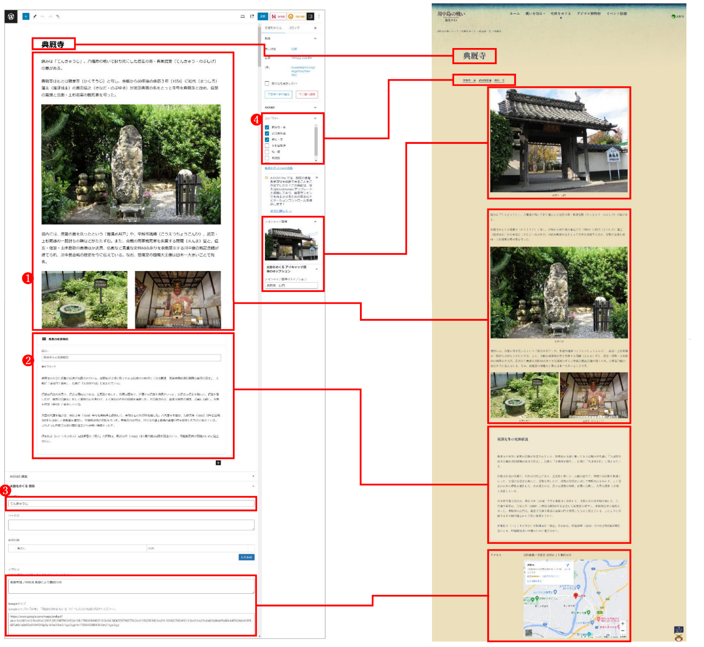
- ギャラリー
複数の写真を並べてアップロードします。
「ギャラリー」の追加方法
「＋」ボタンを押して「ギャラリー」をクリックします。
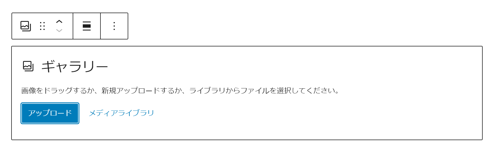
画像入力用のブロックが作成されるので、任意の画像を選択してください。
※画像の詳しいアップロード方法はこちら
※画像のリサイズ方法はこちら
※画像を３枚以上アップロードした際に一段の写真を2枚ずつにレイアウト変更する方法はこちら - 「岡澤先生の史跡解説」
岡澤先生の史跡解説がある場合は、新たにブロックを挿入します。
「岡澤先生の史跡解説」の追加方法
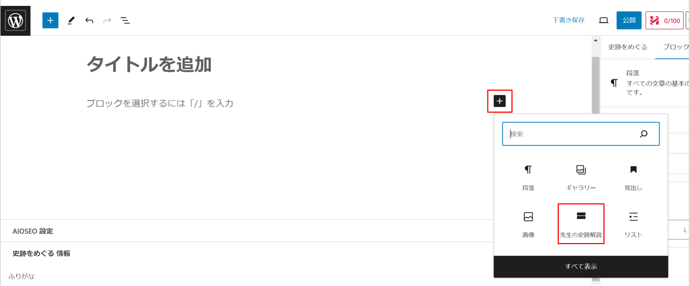
「＋」ボタンを押して「先生の史跡解説」をクリックします。
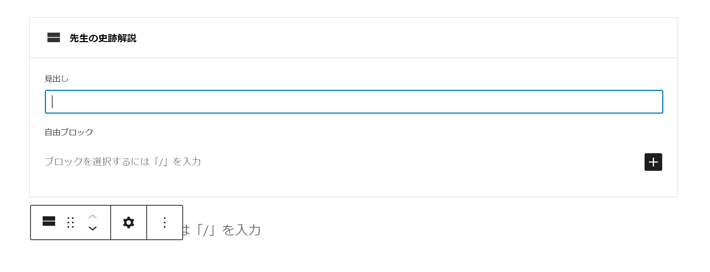
「見出し」に【岡澤先生の史跡解説】、「自由ブロック」には本文を入力します。
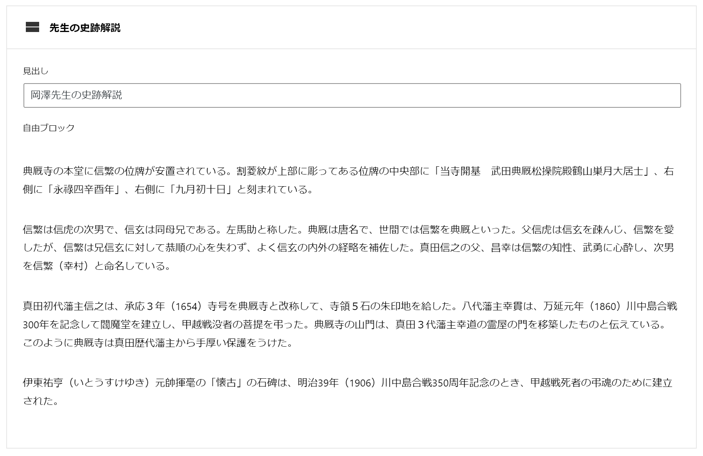 - ふりがな
史跡名のふりがなを入力します。五十音別史跡一覧用のふりがなです。
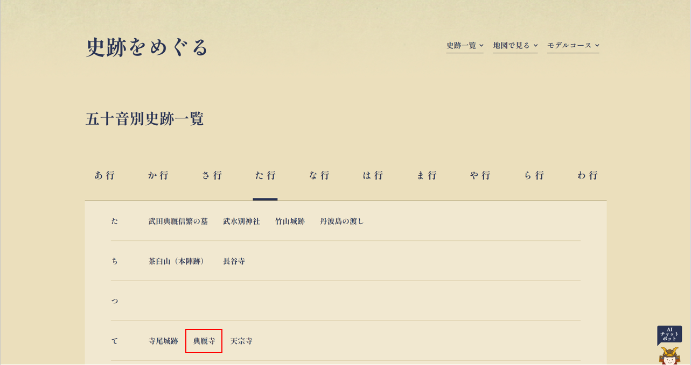 - カテゴリー
該当するカテゴリーにチェックを入れます。各史跡にカテゴリーが表示されます。
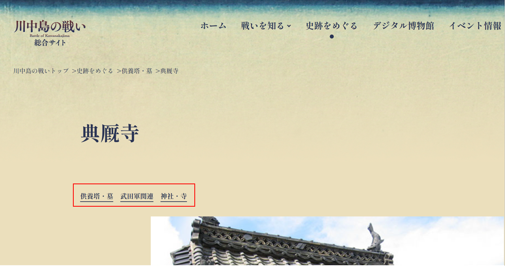 - 公開*（必須）
青い「公開」ボタンを押してください。記事が公開されます。
公開日時が新しいものから順番にHP上に並びます。
- ギャラリー
- 公開した「イベント情報」を編集・削除する
※編集方法はこちら
ギャラリーの一段の写真を２枚ずつにレイアウト変更する
- 画像の１枚をクリックし、メニューの一番左をクリックします。
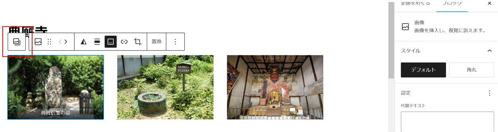 - 右側のブロックメニューにある「カラム」の数字を「２」に変更します。
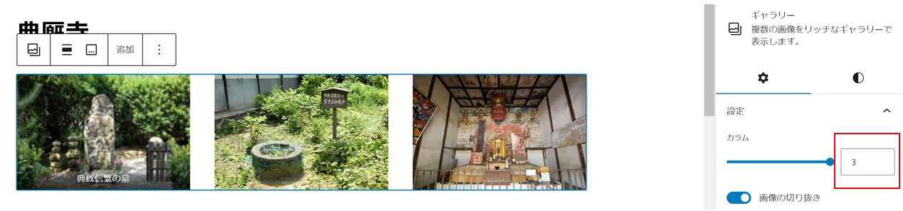
Googleマップを埋め込む
- Googleマップを開きます。
- 施設名で検索し、該当施設の「共有」をクリックします。

- 「地図を埋め込む」を選択し、「HTMLをコピー」をクリック
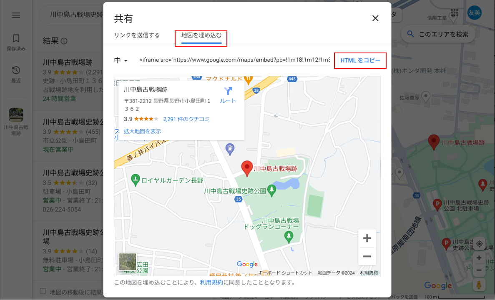 - 新規投稿画面に戻り、「Googleマップ」の入力欄に貼り付けてください。
- 最後に、
【<iframe src="●●●●●●●●●" width="600" height="450" style="border:0;" allowfullscreen="" loading="lazy"
内の【●●●●●●●●●】以外は削除してください。
referrerpolicy="no-referrer-when-downgrade"></iframe>】
※削除しないとGoogleマップがうまく表示されない可能性があります。
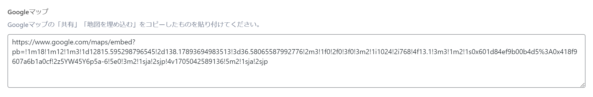